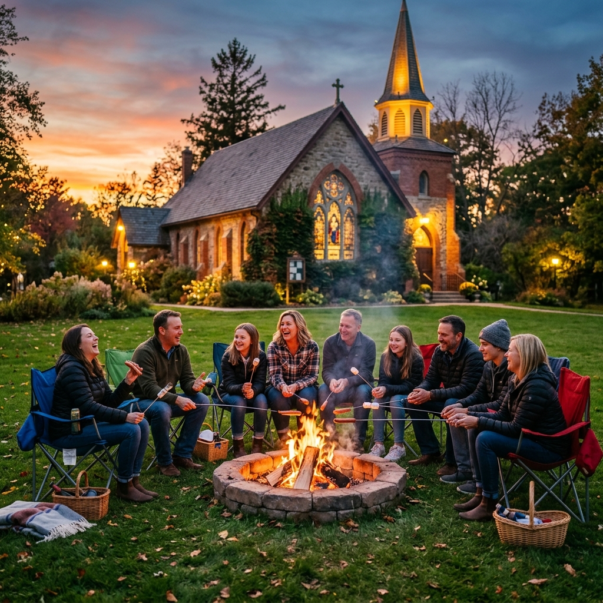

14Jun · Sun
Sunday Worship + Coffee Hour
Worship with communion at 9:30 (in person + Zoom), coffee hour at 10:30. Series: Hearts on Fire.
Events & calendar
A small church with a full calendar. Everything below is open to everyone, visitors and old-timers alike, and almost none of it requires signing up for anything.

Coming up
Worship with communion at 9:30 (in person + Zoom), coffee hour at 10:30. Series: Hearts on Fire.
Pastor-led Bible study on Sunday's text. Coffee at 9:30, study at 10:00.
Fellowship meal 6:30 (hot dogs + vegan options over the fire; bring a side or a chair), outdoor worship with communion 7:00, s'mores 7:30.
Worship with communion at 9:30, coffee hour at 10:30.
Every Wednesday through August 12: meal, worship, s'mores. All ages, all welcome.
July 12–15 at Gustavus Adolphus College. Middle schoolers go July 19–22. Talk to Aym about late registration.
Weekly rhythms
Worship + Coffee Hour, every single week, in person and on Zoom. Sunday School (PreK–5) on first Sundays; Parent Connect and Coffee Hour Buddies on 2nd & 4th Sundays.
WeeklyQuilters in Ranum Hall: tie a quilt for a neighbor in crisis. No skill needed.
WeeklyWord on Wednesday Bible study, with coffee at 9:30. Plus MoSOTH men's coffee at 9.
WeeklySummer: Campfire Worship 6:30 (June 10 – Aug 12). School year: Confirmation 6:00, Youth Group 7:00, Dinner Church 3rd Wednesdays 6:00.
SeasonalSave the date
September: neighbors, food, and "God's Work, Our Hands" service day.
October: costumes, candy, and the best-decorated trunks in Edina.
November: exactly what it sounds like, and exactly as fun.
December: the Christmas story outdoors, with real people (and occasionally real animals).
The weekly email has every upcoming event, the bulletin, and zero spam. The Shepherd's Voice newsletter goes deeper each quarter.